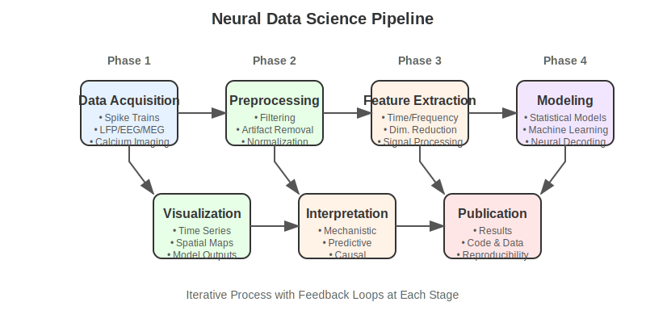

Chapter 8: Data-Science Pipeline in Python#
8.0 Chapter Goals#
Master the data science workflow for neuroscience applications
Implement robust preprocessing, analysis, visualization, and modeling techniques
Work with real neural datasets through practical examples
Create reproducible analysis pipelines for neuroscience experiments
8.1 Neural Data Types & Sources#
 Figure 8.1: The data science pipeline for neural data, showing the progression from data acquisition through processing, analysis, and interpretation.
Neural data comes in many forms, each requiring specialized processing approaches.
8.1.1 Spike Trains and Local Field Potentials (LFPs)#
Spike trains represent the precise timing of action potentials from individual neurons, while LFPs reflect the summed electrical activity of local neural populations.
import numpy as np
import matplotlib.pyplot as plt
from scipy import signal
# Simulating spike train data
def simulate_spike_train(firing_rate=10, duration=1.0, dt=0.001):
"""Generate a simulated spike train with Poisson statistics.
Args:
firing_rate: Average firing rate in Hz
duration: Recording duration in seconds
dt: Time bin size in seconds
Returns:
times: Array of spike times
binary_spikes: Binary array with 1s indicating spikes
"""
n_bins = int(duration / dt)
binary_spikes = np.random.random(n_bins) < firing_rate * dt
times = np.where(binary_spikes)[0] * dt
return times, binary_spikes
# Simulating LFP data
def simulate_lfp(duration=1.0, dt=0.001, frequencies=[5, 10, 40], amplitudes=[1.0, 0.5, 0.2]):
"""Generate simulated LFP data with specified oscillatory components.
Args:
duration: Recording duration in seconds
dt: Time bin size in seconds
frequencies: List of frequency components to include (Hz)
amplitudes: Amplitudes for each frequency component
Returns:
time: Time points
lfp: LFP signal
"""
n_bins = int(duration / dt)
time = np.arange(n_bins) * dt
lfp = np.zeros(n_bins)
for freq, amp in zip(frequencies, amplitudes):
lfp += amp * np.sin(2 * np.pi * freq * time)
# Add some noise
lfp += 0.1 * np.random.randn(n_bins)
return time, lfp
# Visualize spike train and LFP
def plot_neural_data(duration=1.0, dt=0.001):
spike_times, binary_spikes = simulate_spike_train(
firing_rate=15, duration=duration, dt=dt)
time, lfp = simulate_lfp(duration=duration, dt=dt)
fig, axes = plt.subplots(2, 1, figsize=(10, 6), sharex=True)
# Plot spike train raster
axes[0].eventplot([spike_times], lineoffsets=[0], linelengths=[0.5])
axes[0].set_ylabel('Neuron')
axes[0].set_title('Spike Train')
axes[0].set_yticks([])
# Plot LFP
axes[1].plot(time, lfp)
axes[1].set_xlabel('Time (s)')
axes[1].set_ylabel('Amplitude (μV)')
axes[1].set_title('Local Field Potential')
plt.tight_layout()
return fig
8.1.2 EEG, MEG, and fMRI Data#
These non-invasive recording techniques offer different spatial and temporal resolutions:
EEG (Electroencephalography): High temporal resolution (milliseconds), limited spatial resolution
MEG (Magnetoencephalography): Similar to EEG but with improved spatial resolution
fMRI (functional Magnetic Resonance Imaging): Excellent spatial resolution (millimeters), poor temporal resolution (seconds)
def load_and_preprocess_eeg(filename):
"""
Example function to load and preprocess EEG data.
In practice, you would use libraries like MNE for this.
"""
# In actual implementation, replace with:
# import mne
# raw = mne.io.read_raw_fif(filename, preload=True)
# raw.filter(1, 40) # Bandpass filter between 1-40 Hz
print("For EEG data, typical preprocessing includes:")
print("1. Loading data (MNE Python)")
print("2. Filtering (typically bandpass between 1-40 Hz)")
print("3. Artifact rejection/correction (ICA for eye movements)")
print("4. Epoching around events of interest")
print("5. Baseline correction")
# Simulate some preprocessed data
n_channels = 32
n_times = 1000
data = np.random.randn(n_channels, n_times) * 0.5
# Add some alpha oscillations (8-12 Hz)
times = np.arange(n_times) / 250.0 # Assuming 250 Hz sampling rate
alpha_oscillation = np.sin(2 * np.pi * 10 * times)
data[0:5, :] += alpha_oscillation * 2 # Add to first few channels
return data, times
8.1.3 Calcium Imaging#
Calcium imaging measures intracellular calcium concentration changes as a proxy for neural activity.
def process_calcium_data(raw_fluorescence, frame_rate=30):
"""
Basic processing for calcium imaging data.
Args:
raw_fluorescence: Matrix where rows are neurons and columns are frames
frame_rate: Imaging frame rate in Hz
Returns:
df_f: Delta F / F
activity: Deconvolved neural activity estimate
"""
n_neurons, n_frames = raw_fluorescence.shape
time = np.arange(n_frames) / frame_rate
# Calculate baseline (F0) as the 10th percentile over a sliding window
window_size = int(frame_rate * 30) # 30 seconds window
baseline = np.zeros_like(raw_fluorescence)
for i in range(n_neurons):
for t in range(n_frames):
start = max(0, t - window_size)
end = min(n_frames, t + 1)
baseline[i, t] = np.percentile(raw_fluorescence[i, start:end], 10)
# Calculate ΔF/F
df_f = (raw_fluorescence - baseline) / baseline
# In real applications, you would deconvolve to estimate spike rates
# Here, we use a simple threshold-based approach
activity = np.zeros_like(df_f)
for i in range(n_neurons):
# Detect calcium transients using a simple threshold
activity[i, :] = np.convolve(
(df_f[i, :] > 3 * np.std(df_f[i, :])).astype(float),
np.exp(-np.arange(20) / 7), # Exponential kernel
mode='same'
)
return df_f, activity
8.1.4 Behavioral Measurements#
Integrating neural activity with behavior is crucial for understanding neural function.
def correlate_neural_behavioral_data(neural_activity, behavior, lag_range=(-500, 500)):
"""
Compute cross-correlation between neural activity and behavioral measurements.
Args:
neural_activity: Neural activity time series
behavior: Behavioral measurement time series
lag_range: Range of lags to compute in ms
Returns:
lags: Array of lag times in ms
cross_corr: Cross-correlation values
"""
# Ensure inputs are standardized
neural_activity = (neural_activity - np.mean(neural_activity)) / np.std(neural_activity)
behavior = (behavior - np.mean(behavior)) / np.std(behavior)
# Compute cross-correlation
lags = np.arange(lag_range[0], lag_range[1])
cross_corr = np.array([
np.corrcoef(neural_activity[max(0, -lag):min(len(neural_activity), len(neural_activity)-lag)],
behavior[max(0, lag):min(len(behavior), len(behavior)+lag)])[0, 1]
for lag in lags
])
return lags, cross_corr
8.2 Data Preprocessing#
Proper preprocessing is critical for reliable results.
8.2.1 Filtering and Artifact Removal#
Signal filtering removes noise and isolates frequency bands of interest.
def preprocess_neural_signal(signal_data, sampling_rate,
notch_freq=60, bandpass=(1, 100)):
"""
Apply common preprocessing steps to neural data.
Args:
signal_data: Raw neural signal
sampling_rate: Sampling rate in Hz
notch_freq: Frequency to remove (e.g., 60 Hz line noise)
bandpass: Tuple of (low, high) frequencies for bandpass filter
Returns:
filtered_signal: Preprocessed signal
"""
from scipy import signal as sp_signal
# Apply notch filter to remove line noise
notch_b, notch_a = sp_signal.iirnotch(notch_freq, 30, sampling_rate)
notch_filtered = sp_signal.filtfilt(notch_b, notch_a, signal_data)
# Apply bandpass filter
nyquist = 0.5 * sampling_rate
low, high = bandpass
b, a = sp_signal.butter(4, [low/nyquist, high/nyquist], btype='band')
bandpass_filtered = sp_signal.filtfilt(b, a, notch_filtered)
return bandpass_filtered
def detect_artifacts(signal, threshold=5):
"""
Detect artifacts in neural data using amplitude thresholding.
Args:
signal: Neural signal
threshold: Number of standard deviations for threshold
Returns:
artifact_indices: Indices where artifacts were detected
"""
signal_std = np.std(signal)
artifact_indices = np.where(np.abs(signal) > threshold * signal_std)[0]
# Expand artifact regions by 100 samples in each direction
expanded_indices = set()
for idx in artifact_indices:
expanded_indices.update(range(max(0, idx-100), min(len(signal), idx+100)))
return np.array(list(expanded_indices))
8.2.2 Dimensionality Reduction Techniques#
Neural datasets often have high dimensionality, requiring techniques to extract meaningful structure.
Figure 8.2: Comparison of dimensionality reduction techniques for neural data, showing how high-dimensional data can be projected into lower-dimensional spaces using PCA, t-SNE, and UMAP.
def apply_dimensionality_reduction(data, method='pca', n_components=3):
"""
Apply dimensionality reduction to neural data.
Args:
data: Neural data array (samples × features)
method: Dimensionality reduction method ('pca', 'tsne', or 'umap')
n_components: Number of dimensions in output
Returns:
reduced_data: Data in reduced dimensions
"""
from sklearn.decomposition import PCA
from sklearn.manifold import TSNE
# Standardize data
from sklearn.preprocessing import StandardScaler
scaled_data = StandardScaler().fit_transform(data)
if method == 'pca':
model = PCA(n_components=n_components)
reduced_data = model.fit_transform(scaled_data)
explained_variance = model.explained_variance_ratio_
print(f"Explained variance: {np.sum(explained_variance):.2f}")
elif method == 'tsne':
model = TSNE(n_components=n_components, perplexity=30)
reduced_data = model.fit_transform(scaled_data)
elif method == 'umap':
try:
import umap
model = umap.UMAP(n_components=n_components)
reduced_data = model.fit_transform(scaled_data)
except ImportError:
print("UMAP not installed. Install with: pip install umap-learn")
reduced_data = None
return reduced_data
8.2.3 Feature Extraction#
Extract meaningful features from raw neural data.
def extract_frequency_features(signal, sampling_rate,
freq_bands=[(1, 4), (4, 8), (8, 13), (13, 30), (30, 100)]):
"""
Extract frequency band features from neural signal.
Args:
signal: Neural time series
sampling_rate: Sampling rate in Hz
freq_bands: List of frequency bands to extract (delta, theta, alpha, beta, gamma)
Returns:
band_powers: Dictionary of power in each frequency band
"""
from scipy import signal as sp_signal
# Compute power spectral density
freqs, psd = sp_signal.welch(signal, fs=sampling_rate, nperseg=1024)
# Calculate power in each frequency band
band_powers = {}
band_names = ['delta', 'theta', 'alpha', 'beta', 'gamma']
for (band_name, (low, high)) in zip(band_names, freq_bands):
# Find frequency indices within the band
idx_band = np.logical_and(freqs >= low, freqs <= high)
# Calculate mean power in band
band_powers[band_name] = np.mean(psd[idx_band])
return band_powers
def extract_spike_features(spike_times, duration, bin_size=0.01):
"""
Extract features from spike train data.
Args:
spike_times: Array of spike times in seconds
duration: Total duration of recording in seconds
bin_size: Bin size for rate calculation in seconds
Returns:
features: Dictionary of spike train features
"""
# Create binned spike counts
n_bins = int(duration / bin_size)
bins = np.linspace(0, duration, n_bins + 1)
spike_counts, _ = np.histogram(spike_times, bins=bins)
# Calculate features
features = {
'firing_rate': len(spike_times) / duration, # in Hz
'cv': np.std(np.diff(spike_times)) / np.mean(np.diff(spike_times)) if len(spike_times) > 1 else np.nan, # Coefficient of variation
'burst_index': np.sum(spike_counts > 3) / n_bins, # Fraction of bins with >3 spikes
'fano_factor': np.var(spike_counts) / np.mean(spike_counts) if np.mean(spike_counts) > 0 else np.nan, # Fano factor
}
return features
8.2.4 Normalization Approaches#
Proper normalization is essential for comparing across different recordings or subjects.
def normalize_neural_data(data, method='zscore'):
"""
Normalize neural data using different approaches.
Args:
data: Neural data array
method: Normalization method ('zscore', 'minmax', or 'robust')
Returns:
normalized_data: Normalized data
"""
if method == 'zscore':
# Z-score normalization (mean=0, std=1)
mean = np.mean(data, axis=0)
std = np.std(data, axis=0)
normalized_data = (data - mean) / (std + 1e-10) # Avoid division by zero
elif method == 'minmax':
# Min-max normalization (range [0, 1])
min_val = np.min(data, axis=0)
max_val = np.max(data, axis=0)
normalized_data = (data - min_val) / ((max_val - min_val) + 1e-10)
elif method == 'robust':
# Robust scaling using median and IQR
median = np.median(data, axis=0)
q75, q25 = np.percentile(data, [75, 25], axis=0)
iqr = q75 - q25
normalized_data = (data - median) / (iqr + 1e-10)
return normalized_data
8.3 Exploratory Analysis#
Effective exploratory analysis reveals patterns and guides subsequent modeling.
8.3.1 Descriptive Statistics for Neural Data#
def compute_neural_statistics(spike_trains, lfp_signals):
"""
Compute basic statistics for neural data.
Args:
spike_trains: Dictionary of neuron_id -> spike times
lfp_signals: Dictionary of channel_id -> LFP signal
Returns:
stats: Dictionary of statistics
"""
stats = {'spiking': {}, 'lfp': {}}
# Spiking statistics
for neuron_id, spikes in spike_trains.items():
if len(spikes) > 1:
isi = np.diff(spikes) # Inter-spike intervals
stats['spiking'][neuron_id] = {
'firing_rate': len(spikes) / (spikes[-1] - spikes[0]),
'mean_isi': np.mean(isi),
'cv_isi': np.std(isi) / np.mean(isi),
'burst_index': np.sum(isi < 0.01) / len(isi) # Fraction of ISIs < 10 ms
}
# LFP statistics
for channel_id, lfp in lfp_signals.items():
stats['lfp'][channel_id] = {
'mean': np.mean(lfp),
'std': np.std(lfp),
'min': np.min(lfp),
'max': np.max(lfp),
'power': np.mean(lfp**2)
}
return stats
8.3.2 Visualization Techniques#
def visualize_neural_data(spike_times, lfp_data, sampling_rate=1000):
"""
Create common visualizations for neural data.
Args:
spike_times: List of spike times in seconds
lfp_data: LFP signal array
sampling_rate: Sampling rate in Hz
"""
import matplotlib.pyplot as plt
from scipy import signal as sp_signal
# Create figure with multiple plots
fig, axes = plt.subplots(3, 1, figsize=(10, 10), sharex=True)
# Time axis for LFP (assuming LFP starts at time 0)
t_lfp = np.arange(len(lfp_data)) / sampling_rate
# Plot 1: Raw LFP trace
axes[0].plot(t_lfp, lfp_data)
axes[0].set_ylabel('LFP (μV)')
axes[0].set_title('Raw LFP Signal')
# Plot 2: Spectrogram
f, t, Sxx = sp_signal.spectrogram(lfp_data, fs=sampling_rate, nperseg=256, noverlap=128)
axes[1].pcolormesh(t, f, 10*np.log10(Sxx), shading='gouraud')
axes[1].set_ylabel('Frequency (Hz)')
axes[1].set_title('LFP Spectrogram')
# Plot 3: Spike raster
if spike_times.size > 0:
axes[2].eventplot([spike_times], lineoffsets=[0], linelengths=[0.5])
axes[2].set_xlabel('Time (s)')
axes[2].set_ylabel('Neuron')
axes[2].set_yticks([])
axes[2].set_title('Spike Raster')
plt.tight_layout()
return fig
def plot_firing_rate_heatmap(spike_times_dict, bin_size=0.05, duration=None):
"""
Create a heatmap of firing rates over time.
Args:
spike_times_dict: Dictionary mapping neuron_id to spike times
bin_size: Bin size for rate calculation in seconds
duration: Total duration; if None, inferred from data
"""
import matplotlib.pyplot as plt
# Determine duration if not provided
if duration is None:
all_spikes = np.concatenate(list(spike_times_dict.values()))
duration = np.max(all_spikes) if len(all_spikes) > 0 else 1.0
# Create time bins
bins = np.arange(0, duration + bin_size, bin_size)
neuron_ids = list(spike_times_dict.keys())
# Calculate binned spike counts
binned_rates = np.zeros((len(neuron_ids), len(bins) - 1))
for i, neuron_id in enumerate(neuron_ids):
counts, _ = np.histogram(spike_times_dict[neuron_id], bins=bins)
binned_rates[i, :] = counts / bin_size # Convert to Hz
# Sort neurons by average firing rate
avg_rates = np.mean(binned_rates, axis=1)
sort_idx = np.argsort(avg_rates)[::-1] # Descending order
binned_rates = binned_rates[sort_idx, :]
sorted_ids = [neuron_ids[i] for i in sort_idx]
# Plot heatmap
fig, ax = plt.subplots(figsize=(12, 8))
im = ax.imshow(binned_rates, aspect='auto', cmap='viridis',
extent=[0, duration, len(neuron_ids), 0])
ax.set_xlabel('Time (s)')
ax.set_ylabel('Neuron (sorted by firing rate)')
ax.set_title('Firing Rate Heatmap')
cbar = plt.colorbar(im, ax=ax)
cbar.set_label('Firing Rate (Hz)')
return fig
8.3.3 Dimensionality Reduction and Visualization#
def visualize_neural_trajectories(neural_activity, times, events=None, method='pca'):
"""
Visualize neural trajectories using dimensionality reduction.
Args:
neural_activity: Array of shape (n_neurons, n_timepoints)
times: Time points corresponding to neural activity
events: Optional dictionary of event_name -> event_times
method: Dimensionality reduction method ('pca' or 'tsne')
"""
import matplotlib.pyplot as plt
from mpl_toolkits.mplot3d import Axes3D
# Transpose to (n_timepoints, n_neurons) for sklearn
activity_T = neural_activity.T
# Apply dimensionality reduction
reduced_data = apply_dimensionality_reduction(activity_T, method=method, n_components=3)
# Create 3D trajectory plot
fig = plt.figure(figsize=(10, 8))
ax = fig.add_subplot(111, projection='3d')
# Color dots based on time
scatter = ax.scatter(reduced_data[:, 0], reduced_data[:, 1], reduced_data[:, 2],
c=times, cmap='viridis', s=5, alpha=0.8)
# Plot trajectory line
ax.plot(reduced_data[:, 0], reduced_data[:, 1], reduced_data[:, 2],
color='gray', alpha=0.3, linewidth=1)
# Mark events if provided
if events is not None:
colors = plt.cm.tab10.colors
for i, (event_name, event_times) in enumerate(events.items()):
for event_time in event_times:
# Find closest timepoint
idx = np.argmin(np.abs(times - event_time))
ax.scatter(reduced_data[idx, 0], reduced_data[idx, 1], reduced_data[idx, 2],
color=colors[i % len(colors)], s=50, label=event_name if event_time == event_times[0] else "")
ax.set_xlabel(f'{method.upper()} Component 1')
ax.set_ylabel(f'{method.upper()} Component 2')
ax.set_zlabel(f'{method.upper()} Component 3')
ax.set_title(f'Neural Trajectories ({method.upper()})')
if events is not None:
ax.legend()
plt.colorbar(scatter, ax=ax, label='Time (s)')
return fig
8.3.4 Time-Frequency Analysis#
def compute_time_frequency(signal, sampling_rate, method='wavelet'):
"""
Perform time-frequency analysis on neural signals.
Args:
signal: Time series data
sampling_rate: Sampling rate in Hz
method: Method to use ('stft', 'wavelet', or 'multitaper')
Returns:
time: Time points
frequencies: Frequency values
power: Time-frequency power values
"""
from scipy import signal as sp_signal
if method == 'stft':
# Short-time Fourier transform
f, t, Sxx = sp_signal.spectrogram(
signal, fs=sampling_rate, nperseg=sampling_rate//10, noverlap=sampling_rate//20)
power = 10 * np.log10(Sxx + 1e-10) # Convert to dB
return t, f, power
elif method == 'wavelet':
# Continuous wavelet transform
# Define frequencies of interest (1-100 Hz, logarithmically spaced)
frequencies = np.logspace(np.log10(1), np.log10(100), 50)
# Time vector
time = np.arange(len(signal)) / sampling_rate
# Compute wavelet transform (simplified example)
power = np.zeros((len(frequencies), len(signal)))
for i, freq in enumerate(frequencies):
# Calculate appropriate scales for Morlet wavelet
scale = sampling_rate / (2 * np.pi * freq)
wavelet = sp_signal.morlet2(min(10 * scale, len(signal)), scale, w=6)
# Convolve signal with wavelet
power[i, :] = np.abs(sp_signal.convolve(signal, wavelet, mode='same'))**2
return time, frequencies, power
elif method == 'multitaper':
# Multitaper method (using spectrum_fft function)
print("Multitaper method requires specialized libraries like nitime or spectrum.")
print("Using spectrogram method instead.")
return compute_time_frequency(signal, sampling_rate, method='stft')
8.4 Statistical Modeling#
8.4.1 Generalized Linear Models for Neural Data#
def fit_neural_glm(spike_counts, covariates, family='poisson'):
"""
Fit a generalized linear model to neural data.
Args:
spike_counts: Array of spike counts (n_trials, n_neurons)
covariates: Array of predictor variables (n_trials, n_features)
family: Distribution family ('poisson', 'binomial', or 'gaussian')
Returns:
results: GLM results dictionary
"""
import statsmodels.api as sm
import pandas as pd
results = {}
n_neurons = spike_counts.shape[1]
for i in range(n_neurons):
# Create DataFrame for StatsModels
df = pd.DataFrame(covariates)
df['spike_count'] = spike_counts[:, i]
# Define model formula
endog = df['spike_count']
exog = sm.add_constant(df.drop(columns=['spike_count']))
# Fit GLM with appropriate family
if family == 'poisson':
model = sm.GLM(endog, exog, family=sm.families.Poisson())
elif family == 'binomial':
model = sm.GLM(endog, exog, family=sm.families.Binomial())
else: # gaussian
model = sm.GLM(endog, exog, family=sm.families.Gaussian())
model_results = model.fit()
# Store results
results[f'neuron_{i}'] = {
'coefficients': model_results.params,
'pvalues': model_results.pvalues,
'deviance': model_results.deviance,
'aic': model_results.aic,
'bic': model_results.bic,
'summary': model_results.summary()
}
return results
8.4.2 Point Process Models for Spike Trains#
def fit_point_process_model(spike_times, covariates, covariate_times, window_size=50):
"""
Fit a point process model to spike train data.
Args:
spike_times: Array of spike times in ms
covariates: Dictionary of covariate_name -> covariate_values
covariate_times: Time points for covariates
window_size: Window size in ms for history effects
Returns:
model_results: Point process model results
"""
# This is a simplified example of point process modeling
# Real implementations would use specialized libraries
# Bin spikes (1 ms bins)
max_time = max(spike_times[-1], covariate_times[-1]) if len(spike_times) > 0 else covariate_times[-1]
bins = np.arange(0, max_time + 1, 1)
spike_counts, _ = np.histogram(spike_times, bins=bins)
# Interpolate covariates to match spike bins
from scipy.interpolate import interp1d
interp_covariates = {}
for name, values in covariates.items():
f = interp1d(covariate_times, values, kind='linear', bounds_error=False, fill_value='extrapolate')
interp_covariates[name] = f(bins[:-1])
# Create design matrix with history terms
X = np.column_stack([interp_covariates[name] for name in covariates])
# Add spike history terms
for lag in range(1, window_size + 1):
history = np.zeros_like(spike_counts)
history[lag:] = spike_counts[:-lag]
X = np.column_stack((X, history))
# Fit GLM (Poisson regression)
from sklearn.linear_model import PoissonRegressor
model = PoissonRegressor(alpha=0.1) # L2 regularization
model.fit(X, spike_counts)
# Calculate model performance
predicted = model.predict(X)
ll = np.sum(spike_counts * np.log(predicted + 1e-10) - predicted)
feature_names = list(covariates.keys()) + [f'history_{i}' for i in range(1, window_size + 1)]
results = {
'coefficients': dict(zip(feature_names, model.coef_)),
'log_likelihood': ll,
'model': model
}
return results
8.4.3 Bayesian Approaches#
def fit_bayesian_neural_model(neural_data, covariates, model_type='linear'):
"""
Fit a Bayesian model to neural data.
Args:
neural_data: Neural activity data (n_samples, n_neurons)
covariates: Predictor variables (n_samples, n_features)
model_type: Type of model ('linear', 'hierarchical', or 'mixture')
Returns:
model_results: Dictionary of model results
"""
# Note: This is a placeholder for Bayesian modeling
# In practice, you would use PyMC3, Stan, or other Bayesian libraries
print("Bayesian modeling in neuroscience typically uses:")
print("1. PyMC3 or PyMC for Python-based probabilistic programming")
print("2. Stan for high-performance Bayesian inference")
print("3. BayesOpt for Bayesian optimization of models")
if model_type == 'linear':
print("Linear Bayesian model: y ~ Normal(X*β, σ)")
print("with priors: β ~ Normal(0, τ), σ ~ HalfCauchy(5)")
elif model_type == 'hierarchical':
print("Hierarchical Bayesian model for neurons with shared parameters")
print("Individual neuron parameters drawn from population distribution")
elif model_type == 'mixture':
print("Mixture model for detecting different neural states or clusters")
# Return placeholder results
results = {
'model_type': model_type,
'n_neurons': neural_data.shape[1],
'n_covariates': covariates.shape[1],
'message': "This is a placeholder for actual Bayesian modeling with PyMC or Stan."
}
return results
8.4.4 Model Validation Techniques#
def validate_neural_model(model, X, y, method='cross_validation', n_splits=5):
"""
Validate a neural data model using various techniques.
Args:
model: Fitted model object with predict method
X: Features/covariates
y: Target variable (neural activity)
method: Validation method ('cross_validation', 'bootstrap', or 'timeseries_split')
n_splits: Number of splits for cross-validation
Returns:
metrics: Dictionary of validation metrics
"""
from sklearn.model_selection import KFold, TimeSeriesSplit, cross_val_score
from sklearn.metrics import mean_squared_error, r2_score
import numpy as np
metrics = {}
if method == 'cross_validation':
# K-fold cross-validation
kf = KFold(n_splits=n_splits, shuffle=True, random_state=42)
mse_scores = cross_val_score(model, X, y, scoring='neg_mean_squared_error', cv=kf)
r2_scores = cross_val_score(model, X, y, scoring='r2', cv=kf)
metrics['mse'] = -np.mean(mse_scores)
metrics['mse_std'] = np.std(mse_scores)
metrics['r2'] = np.mean(r2_scores)
metrics['r2_std'] = np.std(r2_scores)
elif method == 'bootstrap':
# Bootstrap validation
from sklearn.utils import resample
mse_scores = []
r2_scores = []
for i in range(n_splits):
# Create bootstrap sample
X_boot, y_boot = resample(X, y, random_state=i)
# Fit model on bootstrap sample
model.fit(X_boot, y_boot)
# Predict on original data
y_pred = model.predict(X)
# Compute metrics
mse_scores.append(mean_squared_error(y, y_pred))
r2_scores.append(r2_score(y, y_pred))
metrics['mse'] = np.mean(mse_scores)
metrics['mse_std'] = np.std(mse_scores)
metrics['r2'] = np.mean(r2_scores)
metrics['r2_std'] = np.std(r2_scores)
elif method == 'timeseries_split':
# Time series cross-validation
tscv = TimeSeriesSplit(n_splits=n_splits)
mse_scores = []
r2_scores = []
for train_idx, test_idx in tscv.split(X):
X_train, X_test = X[train_idx], X[test_idx]
y_train, y_test = y[train_idx], y[test_idx]
# Fit and predict
model.fit(X_train, y_train)
y_pred = model.predict(X_test)
# Compute metrics
mse_scores.append(mean_squared_error(y_test, y_pred))
r2_scores.append(r2_score(y_test, y_pred))
metrics['mse'] = np.mean(mse_scores)
metrics['mse_std'] = np.std(mse_scores)
metrics['r2'] = np.mean(r2_scores)
metrics['r2_std'] = np.std(r2_scores)
return metrics
8.5 Machine Learning Applications#
8.5.1 Supervised Learning for Neural Decoding#
def neural_decoding(neural_data, stimulus, test_size=0.2, classifier_type='svm'):
"""
Decode stimuli or behavior from neural activity.
Args:
neural_data: Neural features (n_samples, n_features)
stimulus: Target variable to decode (n_samples,)
test_size: Proportion of data to use for testing
classifier_type: Type of classifier ('svm', 'rf', or 'lda')
Returns:
results: Dictionary of decoding results
"""
from sklearn.model_selection import train_test_split
from sklearn.preprocessing import StandardScaler
from sklearn.svm import SVC
from sklearn.ensemble import RandomForestClassifier
from sklearn.discriminant_analysis import LinearDiscriminantAnalysis
from sklearn.metrics import accuracy_score, confusion_matrix, classification_report
# Split data
X_train, X_test, y_train, y_test = train_test_split(
neural_data, stimulus, test_size=test_size, random_state=42)
# Standardize features
scaler = StandardScaler()
X_train_scaled = scaler.fit_transform(X_train)
X_test_scaled = scaler.transform(X_test)
# Select and train classifier
if classifier_type == 'svm':
classifier = SVC(kernel='linear', C=1.0, probability=True)
elif classifier_type == 'rf':
classifier = RandomForestClassifier(n_estimators=100, random_state=42)
elif classifier_type == 'lda':
classifier = LinearDiscriminantAnalysis()
classifier.fit(X_train_scaled, y_train)
# Make predictions
y_pred = classifier.predict(X_test_scaled)
y_prob = classifier.predict_proba(X_test_scaled) if hasattr(classifier, 'predict_proba') else None
# Evaluate performance
accuracy = accuracy_score(y_test, y_pred)
conf_matrix = confusion_matrix(y_test, y_pred)
class_report = classification_report(y_test, y_pred, output_dict=True)
# Compile results
results = {
'classifier_type': classifier_type,
'accuracy': accuracy,
'confusion_matrix': conf_matrix,
'classification_report': class_report,
'classifier': classifier,
'scaler': scaler
}
if y_prob is not None:
results['prediction_probabilities'] = y_prob
return results
def plot_decoding_results(decoding_results):
"""
Visualize neural decoding results.
Args:
decoding_results: Results from neural_decoding function
"""
import matplotlib.pyplot as plt
import seaborn as sns
# Create figure with subplots
fig, axes = plt.subplots(1, 2, figsize=(15, 6))
# Plot confusion matrix
sns.heatmap(decoding_results['confusion_matrix'], annot=True, fmt='d', cmap='Blues',
xticklabels=sorted(decoding_results['classification_report'].keys())[:-3],
yticklabels=sorted(decoding_results['classification_report'].keys())[:-3],
ax=axes[0])
axes[0].set_title(f"Confusion Matrix\nAccuracy: {decoding_results['accuracy']:.2f}")
axes[0].set_xlabel('Predicted')
axes[0].set_ylabel('True')
# Plot class performance
classes = sorted(decoding_results['classification_report'].keys())[:-3]
f1_scores = [decoding_results['classification_report'][c]['f1-score'] for c in classes]
axes[1].bar(classes, f1_scores)
axes[1].set_title('F1 Score by Class')
axes[1].set_ylim([0, 1])
axes[1].set_ylabel('F1 Score')
axes[1].set_xlabel('Class')
plt.tight_layout()
return fig
8.5.2 Unsupervised Learning for Pattern Discovery#
def discover_neural_patterns(neural_data, method='clustering', n_clusters=3):
"""
Discover patterns in neural data using unsupervised learning.
Args:
neural_data: Neural activity data (n_samples, n_features)
method: Method to use ('clustering', 'hmm', or 'nmf')
n_clusters: Number of clusters/components to find
Returns:
results: Dictionary with pattern discovery results
"""
from sklearn.preprocessing import StandardScaler
from sklearn.cluster import KMeans, DBSCAN
from sklearn.decomposition import NMF, PCA
# Standardize data
scaled_data = StandardScaler().fit_transform(neural_data)
if method == 'clustering':
# K-means clustering
kmeans = KMeans(n_clusters=n_clusters, random_state=42)
clusters = kmeans.fit_predict(scaled_data)
# Compute cluster statistics
cluster_stats = {}
for i in range(n_clusters):
cluster_data = neural_data[clusters == i]
cluster_stats[f'cluster_{i}'] = {
'size': cluster_data.shape[0],
'percentage': cluster_data.shape[0] / neural_data.shape[0] * 100,
'mean': np.mean(cluster_data, axis=0),
'std': np.std(cluster_data, axis=0)
}
results = {
'method': 'k-means',
'clusters': clusters,
'cluster_centers': kmeans.cluster_centers_,
'cluster_stats': cluster_stats,
'inertia': kmeans.inertia_,
'n_clusters': n_clusters
}
elif method == 'hmm':
# Hidden Markov Model
try:
from hmmlearn import hmm
# Fit HMM
model = hmm.GaussianHMM(n_components=n_clusters, covariance_type='full', random_state=42)
model.fit(scaled_data)
# Decode states
states = model.predict(scaled_data)
results = {
'method': 'hmm',
'states': states,
'state_means': model.means_,
'state_covars': model.covars_,
'transition_matrix': model.transmat_,
'n_states': n_clusters
}
except ImportError:
print("hmmlearn not installed. Install with: pip install hmmlearn")
# Fallback to k-means
return discover_neural_patterns(neural_data, method='clustering', n_clusters=n_clusters)
elif method == 'nmf':
# Non-negative Matrix Factorization
# Ensure data is non-negative
min_val = np.min(neural_data)
shifted_data = neural_data - min_val if min_val < 0 else neural_data
# Fit NMF
model = NMF(n_components=n_clusters, random_state=42)
W = model.fit_transform(shifted_data) # Weights
H = model.components_ # Components
results = {
'method': 'nmf',
'weights': W,
'components': H,
'n_components': n_clusters,
'reconstruction_error': model.reconstruction_err_
}
return results
def visualize_neural_patterns(pattern_results, neural_data, times=None):
"""
Visualize patterns discovered in neural data.
Args:
pattern_results: Results from discover_neural_patterns function
neural_data: Original neural data
times: Time points corresponding to neural data (optional)
"""
import matplotlib.pyplot as plt
from sklearn.decomposition import PCA
# Create figure with subplots
fig, axes = plt.subplots(2, 2, figsize=(15, 12))
# Reduce dimensionality for visualization
pca = PCA(n_components=2)
reduced_data = pca.fit_transform(neural_data)
# Plot 1: PCA with clusters or states
if pattern_results['method'] in ['k-means', 'hmm']:
labels = pattern_results['clusters'] if pattern_results['method'] == 'k-means' else pattern_results['states']
scatter = axes[0, 0].scatter(reduced_data[:, 0], reduced_data[:, 1], c=labels,
cmap='viridis', alpha=0.7, s=30)
if pattern_results['method'] == 'k-means':
# Transform cluster centers to PCA space
centers = pca.transform(pattern_results['cluster_centers'])
axes[0, 0].scatter(centers[:, 0], centers[:, 1], c='red', marker='x', s=100)
plt.colorbar(scatter, ax=axes[0, 0], label='Cluster/State')
axes[0, 0].set_title(f"PCA Projection with {pattern_results['method'].upper()} Labels")
else: # NMF
# For NMF, color by the dominant component
dominant_comp = np.argmax(pattern_results['weights'], axis=1)
scatter = axes[0, 0].scatter(reduced_data[:, 0], reduced_data[:, 1], c=dominant_comp,
cmap='viridis', alpha=0.7, s=30)
plt.colorbar(scatter, ax=axes[0, 0], label='Dominant Component')
axes[0, 0].set_title("PCA Projection with Dominant NMF Component")
axes[0, 0].set_xlabel('PC1')
axes[0, 0].set_ylabel('PC2')
# Plot 2: Pattern profiles
if pattern_results['method'] == 'k-means':
for i, center in enumerate(pattern_results['cluster_centers']):
axes[0, 1].plot(center, label=f'Cluster {i}')
axes[0, 1].set_title("Cluster Centers")
axes[0, 1].set_xlabel("Feature")
axes[0, 1].set_ylabel("Value")
axes[0, 1].legend()
elif pattern_results['method'] == 'hmm':
for i, mean in enumerate(pattern_results['state_means']):
axes[0, 1].plot(mean, label=f'State {i}')
axes[0, 1].set_title("State Means")
axes[0, 1].set_xlabel("Feature")
axes[0, 1].set_ylabel("Value")
axes[0, 1].legend()
else: # NMF
for i, comp in enumerate(pattern_results['components']):
axes[0, 1].plot(comp, label=f'Component {i}')
axes[0, 1].set_title("NMF Components")
axes[0, 1].set_xlabel("Feature")
axes[0, 1].set_ylabel("Weight")
axes[0, 1].legend()
# Plot 3: Time series (if time information provided)
if times is not None:
if pattern_results['method'] in ['k-means', 'hmm']:
labels = pattern_results['clusters'] if pattern_results['method'] == 'k-means' else pattern_results['states']
# Plot the first 3 neurons with cluster/state coloring
for i in range(min(3, neural_data.shape[1])):
axes[1, 0].plot(times, neural_data[:, i], '-', alpha=0.7, linewidth=1)
# Color the background by state/cluster
n_labels = len(np.unique(labels))
cmap = plt.cm.get_cmap('viridis', n_labels)
for i, label in enumerate(np.unique(labels)):
mask = labels == label
if np.any(mask):
segments = np.where(np.diff(np.concatenate(([False], mask, [False]))))[0]
segments = segments.reshape(-1, 2)
for start, end in segments:
axes[1, 0].axvspan(times[start], times[end-1], alpha=0.2, color=cmap(i))
axes[1, 0].set_title("Neural Activity with Clusters/States")
axes[1, 0].set_xlabel("Time")
axes[1, 0].set_ylabel("Activity")
else: # NMF
# Plot component activations over time
for i in range(min(pattern_results['n_components'], 5)):
axes[1, 0].plot(times, pattern_results['weights'][:, i], label=f'Comp {i}')
axes[1, 0].set_title("Component Activations Over Time")
axes[1, 0].set_xlabel("Time")
axes[1, 0].set_ylabel("Activation")
axes[1, 0].legend()
# Plot 4: Additional analysis
if pattern_results['method'] == 'k-means':
# Silhouette score plot or cluster distribution
sizes = [stats['size'] for stats in pattern_results['cluster_stats'].values()]
labels = [f'Cluster {i}' for i in range(len(sizes))]
axes[1, 1].pie(sizes, labels=labels, autopct='%1.1f%%', startangle=90)
axes[1, 1].axis('equal')
axes[1, 1].set_title("Cluster Distribution")
elif pattern_results['method'] == 'hmm':
# Transition matrix as heatmap
import seaborn as sns
sns.heatmap(pattern_results['transition_matrix'], annot=True, cmap='Blues', ax=axes[1, 1])
axes[1, 1].set_title("HMM Transition Matrix")
axes[1, 1].set_xlabel("To State")
axes[1, 1].set_ylabel("From State")
else: # NMF
# Component importance or reconstruction error
explained_var = np.var(pattern_results['weights'], axis=0)
explained_var_ratio = explained_var / np.sum(explained_var)
axes[1, 1].bar(range(len(explained_var_ratio)), explained_var_ratio)
axes[1, 1].set_title("Component Variance Contribution")
axes[1, 1].set_xlabel("Component")
axes[1, 1].set_ylabel("Variance Ratio")
plt.tight_layout()
return fig
8.5.3 Deep Learning Approaches for Neural Data#
def create_neural_network_model(input_shape, output_size, model_type='cnn'):
"""
Create deep learning models for neural data.
Args:
input_shape: Shape of input data (e.g., (time_steps, features))
output_size: Number of output classes or continuous outputs
model_type: Type of model ('cnn', 'rnn', or 'transformer')
Returns:
model: Compiled neural network model
"""
# This is a placeholder for deep learning models
print("Building deep neural networks for neural data typically requires:")
print("1. TensorFlow or PyTorch for implementing the models")
print("2. Careful consideration of input data shape and temporal dynamics")
print("3. Appropriate regularization to prevent overfitting with limited data")
if model_type == 'cnn':
print("CNNs are useful for spatial patterns in neural data, e.g., EEG topographies")
print("Typical architecture: Conv1D layers for temporal data or Conv2D for images")
elif model_type == 'rnn':
print("RNNs/LSTMs are ideal for temporal sequences in neural data")
print("Typical architecture: LSTM or GRU layers followed by dense layers")
elif model_type == 'transformer':
print("Transformers with attention can model long-range dependencies in neural data")
print("Typical architecture: Self-attention layers with position encoding")
# Return placeholder results
results = {
'model_type': model_type,
'input_shape': input_shape,
'output_size': output_size,
'message': "This is a placeholder for actual deep learning model implementation"
}
return results
8.5.4 Transfer Learning and Domain Adaptation#
def transfer_learning_neural_model(source_data, source_labels, target_data, target_labels):
"""
Apply transfer learning for neural data analysis.
Args:
source_data: Data from source domain
source_labels: Labels from source domain
target_data: Data from target domain
target_labels: Labels from target domain (can be limited)
Returns:
results: Transfer learning results
"""
from sklearn.ensemble import RandomForestClassifier
from sklearn.model_selection import train_test_split
from sklearn.metrics import accuracy_score
# This is a simplified example of transfer learning
# In practice, you would use neural networks and proper domain adaptation
# Split target data into train/test
X_target_train, X_target_test, y_target_train, y_target_test = train_test_split(
target_data, target_labels, test_size=0.3, random_state=42)
# Baseline model: train on target data only
baseline_model = RandomForestClassifier(n_estimators=100, random_state=42)
baseline_model.fit(X_target_train, y_target_train)
baseline_pred = baseline_model.predict(X_target_test)
baseline_acc = accuracy_score(y_target_test, baseline_pred)
# Transfer learning approach: train on source + target data
combined_X_train = np.vstack([source_data, X_target_train])
combined_y_train = np.concatenate([source_labels, y_target_train])
transfer_model = RandomForestClassifier(n_estimators=100, random_state=42)
transfer_model.fit(combined_X_train, combined_y_train)
transfer_pred = transfer_model.predict(X_target_test)
transfer_acc = accuracy_score(y_target_test, transfer_pred)
# Feature-based transfer (simple approach)
# Train on source data, use predicted probabilities as features for target model
source_model = RandomForestClassifier(n_estimators=100, random_state=42)
source_model.fit(source_data, source_labels)
# Get predicted probabilities as features
source_features_train = source_model.predict_proba(X_target_train)
source_features_test = source_model.predict_proba(X_target_test)
# Train target model with these features
feature_transfer_model = RandomForestClassifier(n_estimators=100, random_state=42)
feature_transfer_model.fit(source_features_train, y_target_train)
feature_transfer_pred = feature_transfer_model.predict(source_features_test)
feature_transfer_acc = accuracy_score(y_target_test, feature_transfer_pred)
results = {
'baseline_accuracy': baseline_acc,
'combined_transfer_accuracy': transfer_acc,
'feature_transfer_accuracy': feature_transfer_acc,
'baseline_model': baseline_model,
'transfer_model': transfer_model,
'feature_transfer_model': feature_transfer_model
}
return results
8.6 Code Lab: Building an End-to-End Pipeline#
Let’s implement a complete neural data pipeline from preprocessing to analysis and visualization.
def neural_data_pipeline(raw_data_file, metadata_file):
"""
End-to-end pipeline for neural data analysis.
Args:
raw_data_file: Path to raw neural data file
metadata_file: Path to experiment metadata
Returns:
results: Dictionary of analysis results
"""
import numpy as np
import matplotlib.pyplot as plt
from scipy import signal
import pandas as pd
from sklearn.decomposition import PCA
from sklearn.model_selection import train_test_split
from sklearn.ensemble import RandomForestClassifier
from sklearn.metrics import accuracy_score, classification_report
# Step 1: Load and preprocess data
print("Step 1: Loading and preprocessing data...")
# Simulated data loading (replace with actual loading code)
# For demonstration, we'll generate synthetic data
np.random.seed(42)
# Simulate multi-channel neural recordings (20 channels, 100000 samples)
n_channels = 20
n_samples = 100000
sampling_rate = 1000 # Hz
# Generate random neural data with some oscillatory components
raw_data = np.random.randn(n_channels, n_samples) * 0.5
# Add alpha oscillations (8-12 Hz) to some channels
t = np.arange(n_samples) / sampling_rate
alpha = np.sin(2 * np.pi * 10 * t)
raw_data[0:5, :] += alpha * 2
# Add beta oscillations (15-30 Hz) to other channels
beta = np.sin(2 * np.pi * 20 * t)
raw_data[5:10, :] += beta * 1.5
# Add gamma oscillations (30-80 Hz) to other channels
gamma = np.sin(2 * np.pi * 50 * t)
raw_data[10:15, :] += gamma * 1.0
# Simulate artifacts
artifact_indices = np.random.choice(n_samples, size=50, replace=False)
for idx in artifact_indices:
if idx < n_samples - 100:
raw_data[:, idx:idx+100] += np.random.randn(n_channels, 1) * 5
# Simulate experimental conditions/events
conditions = ['rest', 'task_A', 'task_B']
events = []
for i in range(0, n_samples, 10000):
if i + 5000 < n_samples:
cond = np.random.choice(conditions)
events.append({
'start_time': i / sampling_rate,
'end_time': (i + 5000) / sampling_rate,
'condition': cond
})
events_df = pd.DataFrame(events)
# Step 2: Preprocessing
print("Step 2: Applying filters and artifact removal...")
# Filter data
filtered_data = np.zeros_like(raw_data)
for i in range(n_channels):
filtered_data[i, :] = preprocess_neural_signal(
raw_data[i, :], sampling_rate, notch_freq=60, bandpass=(1, 100))
# Detect and interpolate artifacts
for i in range(n_channels):
artifacts = detect_artifacts(filtered_data[i, :], threshold=4)
if len(artifacts) > 0:
# Simple interpolation for artifacts
for j in artifacts:
if j > 10 and j < n_samples - 10:
# Linear interpolation
filtered_data[i, j] = np.mean(
[filtered_data[i, j-10:j].mean(),
filtered_data[i, j+1:j+11].mean()])
# Step 3: Feature extraction
print("Step 3: Extracting features...")
# Calculate power in different frequency bands for each channel
freq_bands = {
'delta': (1, 4),
'theta': (4, 8),
'alpha': (8, 13),
'beta': (13, 30),
'gamma': (30, 80)
}
# Extract features in windows
window_size = 1000 # 1 second
step_size = 500 # 0.5 second overlap
n_windows = (n_samples - window_size) // step_size + 1
features = np.zeros((n_windows, n_channels * len(freq_bands)))
for w in range(n_windows):
start = w * step_size
end = start + window_size
for ch in range(n_channels):
window_data = filtered_data[ch, start:end]
# Extract frequency features
freq_features = extract_frequency_features(
window_data, sampling_rate, freq_bands=list(freq_bands.values()))
# Store features
for i, band in enumerate(freq_bands.keys()):
features[w, ch * len(freq_bands) + i] = freq_features[band_names[i]]
# Create labels based on experimental conditions
labels = np.zeros(n_windows, dtype=object)
for w in range(n_windows):
window_time = (w * step_size + window_size/2) / sampling_rate
# Find corresponding event
for _, event in events_df.iterrows():
if event['start_time'] <= window_time < event['end_time']:
labels[w] = event['condition']
break
if labels[w] == 0: # No matching event
labels[w] = 'none'
# Step 4: Dimensionality reduction
print("Step 4: Applying dimensionality reduction...")
# Apply PCA to features
pca = PCA(n_components=10)
features_reduced = pca.fit_transform(features)
print(f"Explained variance by PCA: {np.sum(pca.explained_variance_ratio_):.2f}")
# Step 5: Pattern discovery
print("Step 5: Discovering patterns in data...")
# Apply clustering to find neural states
pattern_results = discover_neural_patterns(
features_reduced, method='clustering', n_clusters=4)
# Calculate state distributions across conditions
state_by_condition = {}
for cond in np.unique(labels):
mask = labels == cond
if np.any(mask):
state_counts = np.bincount(
pattern_results['clusters'][mask],
minlength=pattern_results['n_clusters']
)
state_by_condition[cond] = state_counts / np.sum(state_counts)
# Step 6: Classification/decoding
print("Step 6: Decoding neural states...")
# Only use windows with a condition label
mask = labels != 'none'
X = features_reduced[mask]
y = labels[mask]
# Neural decoding
decoding_results = neural_decoding(X, y, test_size=0.2, classifier_type='rf')
print(f"Decoding accuracy: {decoding_results['accuracy']:.2f}")
# Step 7: Visualization
print("Step 7: Generating visualizations...")
# Create plots
fig1 = visualize_neural_patterns(
pattern_results, features_reduced,
times=np.arange(n_windows) * step_size / sampling_rate)
fig2 = plot_decoding_results(decoding_results)
# Time-frequency plot for a sample channel
ch = 0 # First channel
t, f, Sxx = compute_time_frequency(
filtered_data[ch, :10000], sampling_rate, method='stft')
fig3, ax = plt.subplots(figsize=(10, 6))
im = ax.pcolormesh(t, f, 10*np.log10(Sxx), shading='gouraud', cmap='viridis')
ax.set_ylabel('Frequency (Hz)')
ax.set_xlabel('Time (s)')
ax.set_title(f'Time-Frequency Analysis - Channel {ch}')
plt.colorbar(im, ax=ax, label='Power (dB)')
# Step 8: Compile results
results = {
'raw_data_shape': raw_data.shape,
'filtered_data_shape': filtered_data.shape,
'features_shape': features.shape,
'features_reduced_shape': features_reduced.shape,
'n_events': len(events),
'unique_conditions': np.unique(labels).tolist(),
'pca_explained_variance': np.sum(pca.explained_variance_ratio_),
'pattern_results': {
'n_clusters': pattern_results['n_clusters'],
'method': pattern_results['method'],
'state_distribution': {k: v.tolist() for k, v in state_by_condition.items()}
},
'decoding_results': {
'accuracy': decoding_results['accuracy'],
'classifier_type': decoding_results['classifier_type'],
'class_performance': {
k: v['f1-score']
for k, v in decoding_results['classification_report'].items()
if k not in ['accuracy', 'macro avg', 'weighted avg']
}
},
'figures': {
'patterns': fig1,
'decoding': fig2,
'time_frequency': fig3
}
}
print("Neural data pipeline completed successfully!")
return results
8.7 The Art of Programming for Neuroscience Data#
8.7.1 Why Python for Neural Data Analysis#
Figure 8.3: The Python ecosystem for neuroscience, showing the relationships between core libraries, data processing tools, visualization packages, machine learning frameworks, and specialized neuroscience libraries.
Python has become the dominant programming language in neuroscience and data science for several compelling reasons:
Ecosystem Maturity: Libraries like NumPy, SciPy, pandas, and matplotlib provide robust foundations for scientific computing.
Domain-Specific Tools: Specialized packages like MNE-Python (for EEG/MEG), Neo (for electrophysiology), and CaImAn (for calcium imaging) make complex analyses accessible.
Integration Capabilities: Python easily interfaces with other languages (C/C++, R) and platforms (MATLAB) commonly used in neuroscience.
Balance of Readability and Power: Python’s clean syntax makes code readable while maintaining computational efficiency through vectorized operations and compiled extensions.
Community Support: Active communities in both neuroscience and data science continuously contribute to tools and documentation.
# Example illustrating Python's readability and power for neural analysis
import numpy as np
import matplotlib.pyplot as plt
from scipy import signal
import pandas as pd
# Define preprocessing function with clear, readable code
def preprocess_neural_data(raw_data, sampling_rate=1000):
"""Preprocess neural time series data.
Args:
raw_data: Raw neural signal (channels x time)
sampling_rate: Recording sampling rate in Hz
Returns:
Preprocessed data and frequency analysis results
"""
# 1. Apply bandpass filter (1-100 Hz)
nyq = 0.5 * sampling_rate
b, a = signal.butter(4, [1/nyq, 100/nyq], btype='band')
filtered = signal.filtfilt(b, a, raw_data, axis=1)
# 2. Remove line noise with notch filter
notch_b, notch_a = signal.iirnotch(60, 30, sampling_rate)
notched = signal.filtfilt(notch_b, notch_a, filtered, axis=1)
# 3. Compute power spectrum
freqs, psd = signal.welch(notched, fs=sampling_rate, nperseg=1024, axis=1)
# 4. Create results dataframe
results = pd.DataFrame({
'theta_power': np.mean(psd[:, (freqs >= 4) & (freqs <= 8)], axis=1),
'alpha_power': np.mean(psd[:, (freqs >= 8) & (freqs <= 12)], axis=1),
'beta_power': np.mean(psd[:, (freqs >= 12) & (freqs <= 30)], axis=1)
})
return {
'preprocessed_data': notched,
'frequencies': freqs,
'power_spectrum': psd,
'band_powers': results
}
# Clear, concise visualization of results
def plot_power_spectrum(results, channel=0):
"""Plot power spectrum of neural data."""
plt.figure(figsize=(10, 6))
plt.semilogy(results['frequencies'], results['power_spectrum'][channel])
plt.xlabel('Frequency (Hz)')
plt.ylabel('Power Spectral Density (μV²/Hz)')
plt.title(f'Neural Power Spectrum - Channel {channel}')
# Add shaded areas for frequency bands
bands = {
'Delta': (1, 4),
'Theta': (4, 8),
'Alpha': (8, 12),
'Beta': (12, 30),
'Gamma': (30, 100)
}
colors = ['#E6F5FF', '#CCEBFF', '#99D6FF', '#66C0FF', '#33AAFF']
for (band, (low, high)), color in zip(bands.items(), colors):
plt.axvspan(low, high, color=color, alpha=0.5, label=band)
plt.legend()
plt.grid(True, alpha=0.3)
return plt.gcf()
8.7.2 From Code to Concept: Programming as Scientific Thinking#
Effective data science in neuroscience is less about writing perfect code and more about translating scientific questions into computational approaches:
Hypothesis-Driven Programming: Start with the scientific question, then determine the appropriate analysis approach.
Iterative Development: Begin with a minimal viable analysis that addresses the core question, then refine.
Visual Debugging: Continuously visualize intermediate results to catch errors and build intuition.
Pipeline Thinking: Structure code as transformative steps in a data pipeline rather than monolithic scripts.
Documenting Reasoning: Comment not just what code does, but why certain parameters or approaches were chosen.
# Example of hypothesis-driven programming for neural decoding
def test_neural_decoding_hypothesis(neural_data, stimulus_conditions, hypothesis):
"""Test specific hypothesis about neural coding using appropriate analysis.
Args:
neural_data: Matrix of neural activity (neurons x time)
stimulus_conditions: Experimental conditions at each timepoint
hypothesis: Dict with hypothesis parameters
Returns:
Dictionary of results relevant to the hypothesis
"""
# Extract hypothesis parameters
feature_type = hypothesis.get('feature_type', 'rate')
decoding_window = hypothesis.get('decoding_window', (-0.5, 1.5))
model_type = hypothesis.get('model_type', 'linear')
# Convert hypothesis parameters to analysis approach
if feature_type == 'rate':
# Use firing rate features
features = extract_rate_features(neural_data, window=decoding_window)
elif feature_type == 'temporal':
# Use temporal pattern features
features = extract_temporal_features(neural_data, window=decoding_window)
elif feature_type == 'synchrony':
# Use synchrony-based features
features = extract_synchrony_features(neural_data, window=decoding_window)
# Select appropriate model based on hypothesis
if model_type == 'linear':
accuracy, model = fit_linear_decoder(features, stimulus_conditions)
elif model_type == 'nonlinear':
accuracy, model = fit_nonlinear_decoder(features, stimulus_conditions)
# Test against specific prediction in hypothesis
predicted_accuracy = hypothesis.get('predicted_accuracy', 0.5)
p_value = statistical_test(accuracy, predicted_accuracy)
return {
'hypothesis_parameters': hypothesis,
'accuracy': accuracy,
'p_value': p_value,
'model': model,
'conclusion': 'Supported' if p_value < 0.05 else 'Not supported'
}
8.7.3 The Future of Neural Data Science: AI-Augmented Programming#
Figure 8.4: Evolution of neural data analysis workflows, contrasting traditional programming approaches with AI-augmented programming that enables neuroscientists to focus on scientific questions rather than implementation details.
The landscape of neural data analysis is rapidly evolving with the integration of AI assistants:
From Syntax to Intent: Future programming will focus more on communicating analysis intent rather than syntax details.
Agent-Assisted Workflows: AI agents will handle routine coding tasks, allowing neuroscientists to focus on experimental design and interpretation.
Natural Language Data Exploration: Interactive exploration of datasets through natural language queries.
Code Generation and Optimization: AI generating efficient, optimized code based on high-level descriptions of analysis goals.
Democratized Analysis: Advanced analysis techniques becoming accessible to researchers without extensive programming backgrounds.
# Example of a future AI-augmented neural analysis workflow
# The comments represent natural language instructions to an AI assistant
# "Load the calcium imaging dataset and preprocess it using standard parameters"
dataset = load_calcium_imaging_dataset('experiment_20230512.h5')
preprocessed_data = preprocess_calcium_data(dataset.raw_traces)
# "Extract cell activity during the different experimental conditions"
cell_activity = extract_condition_specific_activity(
preprocessed_data,
dataset.experiment_conditions
)
# "Find cells that show significant tuning to the target stimulus"
# The AI would generate appropriate statistical testing code
tuned_cells = find_significantly_tuned_cells(
cell_activity,
condition='target_stimulus',
statistical_test='permutation',
alpha=0.05
)
# "Visualize the spatial distribution of tuned cells"
# The AI would generate appropriate visualization code
spatial_map = plot_spatial_tuning_map(
tuned_cells,
dataset.cell_coordinates,
plot_type='heatmap'
)
# "Create a model that predicts stimulus identity from population activity"
# The AI would select an appropriate decoding approach based on data properties
decoder_model = create_population_decoder(
cell_activity,
dataset.stimulus_conditions,
model_type='optimal', # AI selects appropriate model
cross_validation='timeseries' # AI selects appropriate validation approach
)
# "Summarize the key findings in a publication-ready figure"
# The AI would generate comprehensive figure code
create_summary_figure(
tuned_cells=tuned_cells,
spatial_map=spatial_map,
decoder_performance=decoder_model.performance,
save_path='figures/main_result.pdf'
)
This AI-augmented workflow illustrates how neuroscientists of the future will interact with data through higher-level conceptual instructions rather than detailed code implementation. The AI handles the translation from scientific intent to executable code, allowing researchers to focus on the scientific questions rather than programming details.
8.7.4 Best Practices for the AI-Assisted Neuroscience Era#
As we transition to AI-augmented neural data analysis, several best practices emerge:
Focus on Scientific Questions: Clearly formulate scientific hypotheses and analysis goals rather than programming details.
Conceptual Understanding: Maintain understanding of analysis principles, even when implementation details are handled by AI.
Critical Evaluation: Carefully verify AI-generated analyses and visualizations for scientific validity.
Documentation and Reproducibility: Ensure that analysis methods are thoroughly documented, including AI-generated components.
Continuous Learning: Stay current with analytical approaches and methodologies to effectively guide AI tools.
The future neuroscientist will be less a programmer and more an analytical strategist, guiding AI tools to efficiently transform data into insights.
8.8 Take-aways#
Domain-Specific Adaptations: Neural data requires specialized preprocessing and feature extraction techniques tailored to the specific data type (spikes, LFPs, EEG, etc.).
Critical Preprocessing: Small changes in preprocessing parameters can dramatically affect results in neural data analysis, requiring careful validation and parameter selection.
Feature Extraction Matters: The choice of features is crucial for neural data analysis, with frequency domain features often being particularly informative.
Dimensionality Reduction: Neural datasets typically have high dimensionality, necessitating effective dimensionality reduction for visualization and modeling.
Model Validation: Cross-validation in neural data analysis should account for temporal dependencies and non-stationarity.
Encoding vs. Decoding: Both approaches provide complementary insights - encoding models predict neural responses to stimuli, while decoding models predict stimuli from neural activity.
Reproducibility Challenges: Neural data analysis requires meticulous documentation of each processing step to ensure reproducibility.
Python Ecosystem: Python’s rich ecosystem of libraries and tools makes it uniquely suited for neural data analysis.
AI-Augmented Analysis: The future of neural data science involves AI assistants that handle routine coding tasks, allowing neuroscientists to focus on higher-level questions and interpretations.
8.9 Further Reading & Media#
Neuroscience Data Analysis#
Kriegeskorte, N., & Golan, T. (2019). “Neural network models and deep learning”. Current Biology, 29(7), R231-R236.
Paninski, L., & Cunningham, J. P. (2018). “Neural data science: accelerating the experiment-analysis-theory cycle in large-scale neuroscience”. Current Opinion in Neurobiology, 50, 232-241.
Glaser, J. I., Benjamin, A. S., Farhoodi, R., & Kording, K. P. (2019). “The roles of supervised machine learning in systems neuroscience”. Progress in Neurobiology, 175, 126-137.
Harris, K. D., Quiroga, R. Q., Freeman, J., & Smith, S. L. (2016). “Improving data quality in neuronal population recordings”. Nature Neuroscience, 19(9), 1165-1174.
Vyas, S., Golub, M.D., Sussillo, D., & Shenoy, K.V. (2020). “Computation Through Neural Population Dynamics”. Annual Review of Neuroscience, 43, 249-275.
Kobak, D., & Berens, P. (2019). “The art of using t-SNE for single-cell transcriptomics”. Nature Communications, 10(1), 1-14.
Pachitariu, M., & Sahani, M. (2012). “Learning visual motion in recurrent neural networks”. Advances in Neural Information Processing Systems, 25, 1322-1330.
Python for Scientific Computing#
VanderPlas, J. (2016). A Whirlwind Tour of Python. O’Reilly Media.
McKinney, W. (2017). Python for Data Analysis: Data Wrangling with Pandas, NumPy, and IPython. O’Reilly Media.
Raschka, S., & Mirjalili, V. (2019). Python Machine Learning: Machine Learning and Deep Learning with Python, scikit-learn, and TensorFlow 2. Packt Publishing.
Géron, A. (2019). Hands-On Machine Learning with Scikit-Learn, Keras, and TensorFlow: Concepts, Tools, and Techniques to Build Intelligent Systems. O’Reilly Media.
AI-Augmented Programming#
Bubeck, S., Chandrasekaran, V., Eldan, R., Gehrke, J., Horvitz, E., Kamar, E., Lee, P., Lee, Y.T., Li, Y., Lundberg, S. and Nori, H. (2023). “Sparks of Artificial General Intelligence: Early experiments with GPT-4”. arXiv preprint arXiv:2303.12712.
Chen, M., Tworek, J., Jun, H., Yuan, Q., Pinto, H.P.D.O., Kaplan, J., Edwards, H., Burda, Y., Joseph, N., Brockman, G. and Ray, A. (2021). “Evaluating large language models trained on code”. arXiv preprint arXiv:2107.03374.
Shen, S., Amer, M., Bender, G., Ramachandran, P., & Shlens, J. (2023). “Augmenting Developers with Large Language Models: The Impact of Code Suggestions on Productivity, Code Quality, and Well-being at Microsoft”. arXiv preprint arXiv:2309.11436.
Bricken, T., Elhage, N., Vance, N., Nanda, N., Edwards, B., Steinhardt, J., & Bowman, S. R. (2023). “Towards understanding the behavior of neural algorithms”. arXiv preprint arXiv:2305.18465.
Shanahan, M. (2022). “Talking about large language models”. arXiv preprint arXiv:2212.03551.
Future of Neuroscience and AI#
Richards, B.A., Lillicrap, T.P., Beaudoin, P., Bengio, Y., Bogacz, R., Christensen, A., Clopath, C., Costa, R.P., de Berker, A., Ganguli, S. and Gillon, C.J. (2019). “A deep learning framework for neuroscience”. Nature Neuroscience, 22(11), 1761-1770.
Zador, A. M. (2019). “A critique of pure learning and what artificial neural networks can learn from animal brains”. Nature Communications, 10(1), 1-7.
Jonas, E., & Kording, K. P. (2017). “Could a neuroscientist understand a microprocessor?”. PLoS computational biology, 13(1), e1005268.
Marblestone, A. H., Wayne, G., & Kording, K. P. (2016). “Toward an integration of deep learning and neuroscience”. Frontiers in computational neuroscience, 10, 94.
Kording, K. P., Benjamin, A. S., Farhoodi, R., & Glaser, J. I. (2020). “The roles of machine learning in biomedical science”. Nature Machine Intelligence, 2(4), 198-204.
Recommended Tools and Libraries#
Neuroscience Data Analysis#
MNE-Python: Comprehensive toolkit for processing electrophysiological data
Neo: Python package for handling electrophysiology data in Python
Elephant: Analysis library for neurophysiology data
CaImAn: Calcium Imaging Analysis package
SpikeInterface: Framework for spike sorting and electrophysiology analysis
NWB (Neurodata Without Borders): Standard format for neurophysiology data
DeepLabCut: Deep learning for markerless pose estimation
CellProfiler: Cell image analysis software
BrainGlobe: Tools for brain atlas visualization and anatomical analysis
AI-Assisted Programming#
GitHub Copilot: AI pair programmer that offers code suggestions
Jupyter AI: AI extensions for Jupyter notebooks
LangChain: Framework for developing applications powered by language models
Gradio: Tool for quickly creating UIs for machine learning models
Streamlit: App framework for machine learning and data science
Hugging Face Transformers: State-of-the-art NLP models for code generation
AutoML: Automated machine learning platforms for model selection and hyperparameter tuning